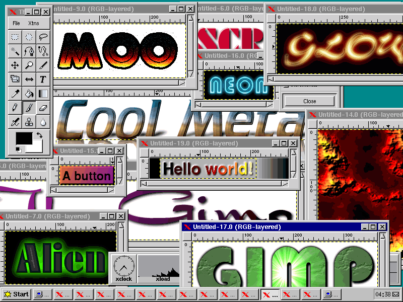

“Taken June 1998. This is just a screeshot showing off some of the quick-n-easy effects that can be created with the GIMP default plug-ins. The window manager is fvwm95, which emulates some of the functionality and “look and feel” of Windows 95.” [ source ]